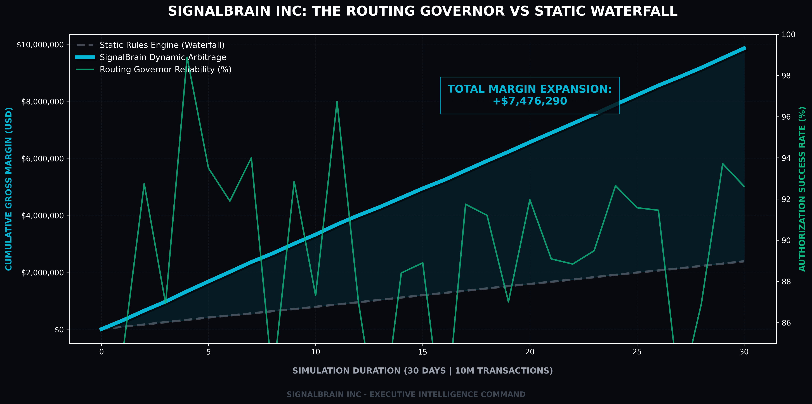
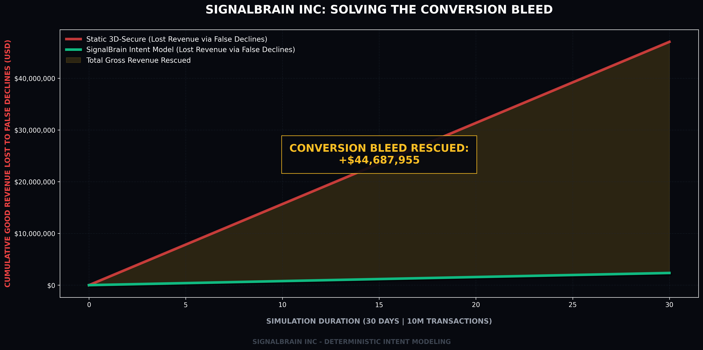

Executive Command Matrix | V8
Replacing reactive rules engines with deterministic physics. SignalBrain dynamically arbitrages global rails to expand gross margin, while actively rescuing good revenue lost to 'Friendly Friction' false declines.
Trailing 30-Day Simulation Volume
Via Multi-Armed Bandit Dynamic Arbitrage
Maintaining reliability across tiered routing

